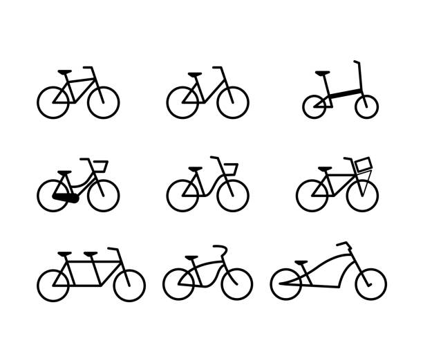
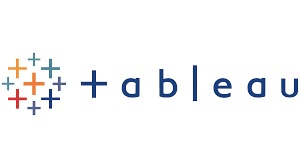

In this project, Microsoft Excel was used to analyze data from one of the largest bike share programs in the US.
Microsoft Excel visualization tools was used to explore the data and understand usage patterns. This project demonstrated the power of Microsoft Excel as a tool for understanding complex datasets.
.

This project involved creating an interactive sales dashboard using Microsoft Excel as the visualization tool. Through the dashboard, users can explore and analyze the data using various interactive features, such as filters, slicers, and charts.
In this project, Microsoft Excel was used to analyze data from one of the largest bike share programs in the US.
Microsoft Excel visualization tools was used to explore the data and understand usage patterns. This project demonstrated the power of Microsoft Excel as a tool for understanding complex datasets.
This project used SQL Server to analyze global COVID-19 data. The dataset was provided by Our World in Data organization and included data from over 200 countries from January 2020 to April 2021.

In this project, Tableau visualization tool was used to create a series of charts and maps that helped to explore trends in COVID-19 data set obtained from Our World in Data organization.